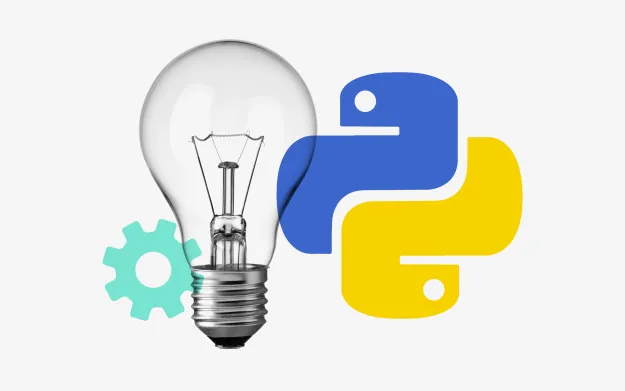

Why Learning Python is Essential and its Benefits?
Python is a popular programming language that has been remarkably easy to learn, and also it works as a stepping stone for understanding other programming languages and frameworks. Even if you are an absolute beginner and have no idea of coding and programming, then it is the perfect option for you to try and consider once.
It is widely used by big giant companies such as Google, Pinterest, Instagram, Disney, Yahoo!, Nokia, IBM, and many more. And even if coding and other technical things won’t matter you, then here’s a piece of good news, if once you learn Python, then you get abundant ways to utilize the skill. And the best part is that a lot of big giant IT and other companies depend entirely on this language which lets you make good money as a Python developer.
Reasons to Learn Python:
1. It is a big community:
No doubt, Python has a large community which helps you in learning new technology and being with the experienced professional is also one of the most significant assets. And when it comes to learning a programming language, you can get stuck with one or the other issue, and that’s when you’ll need a helping hand. So, as we know Google has most of the answers, the solution can be found in minutes, but there are several other communities such as StackOverflow and many others which is a common platform for various Python experts to help beginners and experienced people with their issues.
2. Machine Learning:
As we all know, the machine learning trend is gaining pace rapidly, and it is also one of the main reasons why programmers are learning Python in 2019. The complexity of algorithms is getting sophisticated day by day, which leads us to Python as it is the only primary programming language that makes things easy for you to understand and do a pet project or want to learn new concepts. And not just machine learning, but it is also recommended as the best platform for Data Science as here, you will find more relevant libraries, content as a developer community.
3. Web Development:
All the development platforms, Data Science and, even machine learning prefer the Python programming language. The main reason is that it offers so many relevant libraries and frameworks such as Django and Flask, which have consequently made web development an effortless task to perform. Thus, the task which takes hours in PHP can be easily accomplished within a few minutes on Python, and it is also used a lot for web scraping. The Python web development frameworks such as Django and Flask are the most recommended frameworks for creating web applications in no time.
4. Simplicity:
It is a straightforward programming language to learn even for non-coders. As it does not contain the language which has tough syntaxes or weird rules to follow. It is both readable and straightforward with an easy setup to deal with. So, install Python, and you are done with no issues ahead, unlike other programming languages. Also, while installing it, whenever asked, you have to add Python in the desired path which helps you to run it from anywhere on your computer.
5. It helps in performing multipurpose tasks:
It allows the developers to perform multiple tasks at the same time and is not stuck to just one thing. Such as R, a programming language is functional on Data Science and Machine learning, but eventually, it has made its place in web development as well. It helps you to diversify your knowledge and talent with different frameworks and do many things simultaneously.
So, create your desired web applications using Django and Flask, can perform Data Analysis and also write the scripts to automate and control your day to day tasks.